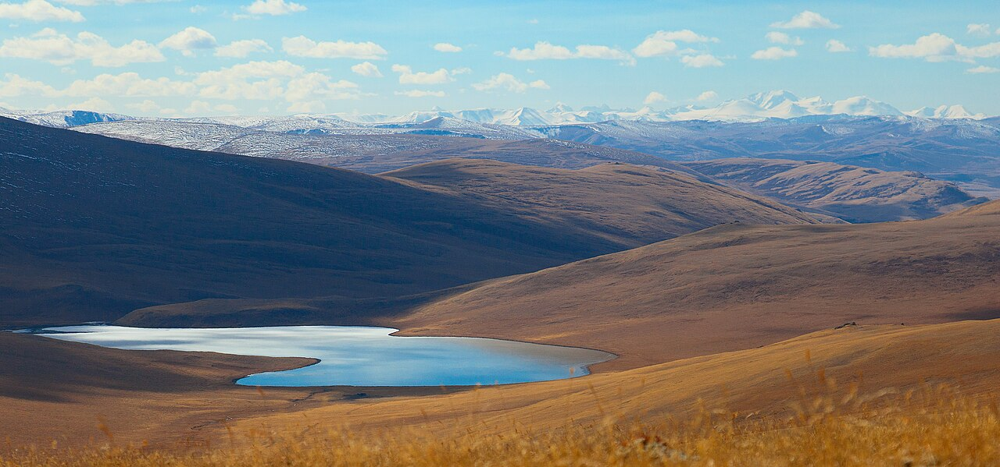
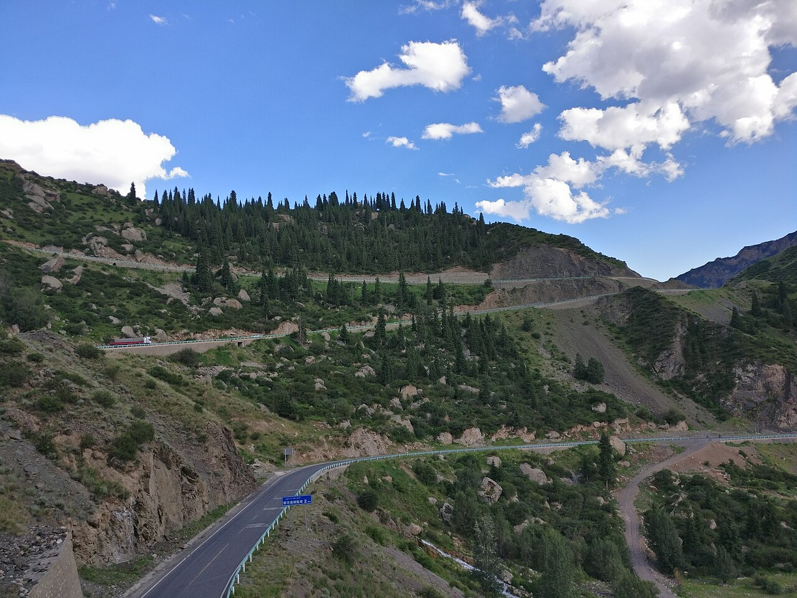

新藏公路（G219 叶城—拉孜段接 G318 至拉萨）穿越昆仑山、冈底斯山、喜马拉雅山麓，平均海拔 4500 米以上，有「世界最高公路」之称。仅适合经验丰富、车辆可靠、时间充裕的自驾者。
线路从新疆叶城（或喀什方向接入）出发，经麻扎、赛图拉、界山达坂、狮泉河、札达、冈仁波齐、珠峰方向至拉萨。全程多个 5000 米以上达坂，补给点稀少，氧气与油料规划是生存级课题。
6–9 月相对通行，即使夏季也可能遇雪。需办理边防证，部分区域限制外籍人士。阿里地区人文与自然并重：古格王朝遗址、玛旁雍错、冈仁波齐、珠峰大本营（需另办许可）是延伸亮点。
Itinerary
分日行程
叶城 → 麻扎
新藏线零公里标志在叶城。首日短程适应，检查备胎、油料、氧气。麻扎有简易补给，尽早休息。
麻扎 → 三十里营房
进入高海拔无人区，昆仑山段景观荒寂壮美。赛图拉、奇台达坂等垭口逐一翻越，勿逞强赶路。
三十里营房 → 狮泉河
翻越界山达坂（5248 米），进入西藏阿里。狮泉河（噶尔）是阿里地区首府，相对完善的补给与医疗。
狮泉河 → 札达
前往札达土林与古格王朝遗址。土林日落色彩奇幻，古格遗址需徒步 uphill，海拔 3800 米左右。
札达 → 塔钦（冈仁波齐）
经巴尔兵站至塔钦，远观冈仁波齐与玛旁雍错（需另路进入）。转山季 pilgrims 众多，尊重宗教活动。
塔钦 → 萨嘎 → 拉孜
沿 G219 东行，喜马拉雅北麓景观展开。拉孜可接 G318 继续东进。
拉孜 → 日喀则 → 拉萨
经日喀则可访扎什伦布寺。傍晚抵拉萨，完成新藏线壮举。全程检查车辆损耗。
Photo Essay
沿途影像





Highlights
核心景点
界山达坂
新藏线著名最高点之一，5248 米，界碑标志新疆与西藏分界。风大缺氧，拍照后尽快下撤。
札达土林
喜马拉雅西缘的侵蚀地貌，像城堡群矗立在象泉河谷。日出日落时土林呈金色，与古格遗址组合游览。
古格王朝遗址
10 世纪西藏西部王国遗骸，宫殿与佛窟凿于土林之上。需一定体力攀登，历史氛围浓厚。
冈仁波齐
多种宗教认定的神山，转山路线环绕 52 公里。不转山也可在塔钦远观金字塔形峰体。
玛旁雍错
与冈仁波齐相邻的圣湖，湖水透明度极高。鬼湖拉昂错在隔壁，两湖一淡一咸，景观对比强烈。
Route
途经站点
新藏线起点
新疆侧最后大城市，加满油。
昆仑山中段
简易住宿，海拔 4980 米。
阿里首府
关键补给与休整点。
土林与古格
至少留 1 天参观。
终点
经拉孜接 G318 抵达。
Practical
实用信息
- 新藏线仅建议四驱 SUV、至少两车结伴，携带卫星电话。
- 全程多个 5000 米达坂，氧气、红景天、高原安等备足，有严重高反立即下撤。
- 油料规划精确到升，叶城、狮泉河、拉孜为关键加油点。
- 6 月前、10 月后极易遇雪封山，严格遵循交管部门公告。
- 阿里地区边防检查多，身份证、边防证、行车本随时备查。
EV Tips
新能源出行提示
驾驶腾势 N7 等纯电 SUV 出发前，请特别注意以下事项：
- 新藏线几乎无快充覆盖，纯电车辆不建议作为唯一进藏工具；若必须走，需专业后勤与发电车支援。
- 极端高海拔与低温对电池是极限测试，普通 EV 难以独立完成全程。
- 可考虑拉萨—狮泉河段分段，叶城方向改用油车或包车接驳。